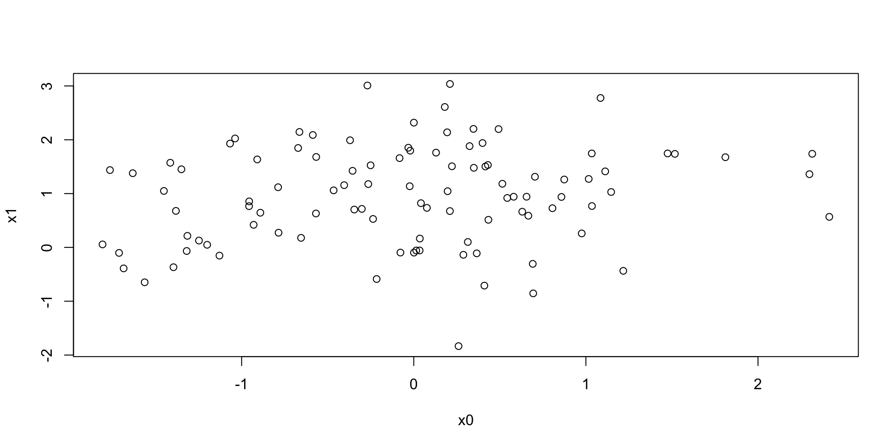
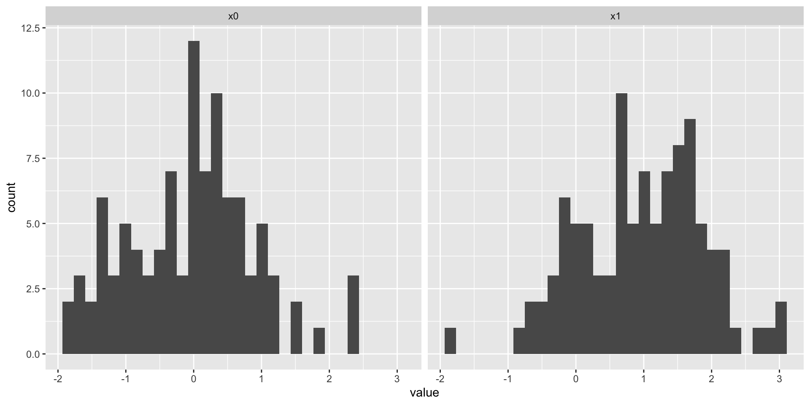
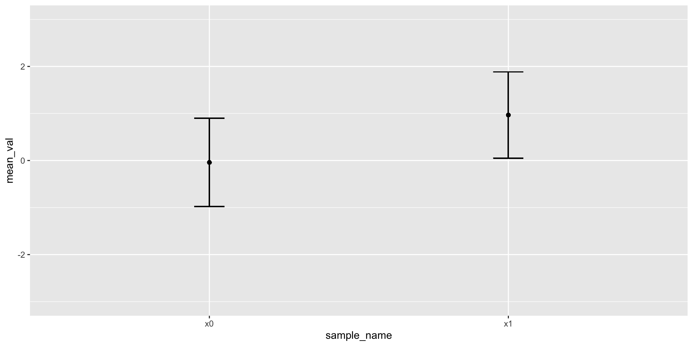

Communicating uncertainty and risk
2025-02-27
Overview
In the news
Figure 1 from Dwyer-Lindgren et al. (2024)
Figure 1 from Dwyer-Lindgren et al. (2024)
Announcements
- Pending: Final Project proposal
- Pending: Exercise 04
Available through March 2
Last time…
- Introduction to R
- Introducing DataCamp
Today
- Communicating uncertainty and risk
- Work session
- R (DataCamp)
- Exercise 04
- Final project proposal
Communicating uncertainty and risk
Let’s make some data
Plot the data
Figure 1
Histograms
Let’s ‘tidy’-up
- “Tidy” data \(\rightarrow\) rectangular data; columns are variables; rows are observations.
- A data frame (
data.frame()) is a useful way to store tidy data
sample_name value
1 x0 0.8614803
2 x0 0.2576779
3 x0 -0.3811613
4 x0 -1.3882350
5 x0 0.5048762
6 x0 0.6769181 sample_name value
195 x1 2.06085625
196 x1 1.20841368
197 x1 1.71209415
198 x1 2.21844223
199 x1 0.77053586
200 x1 -0.09150253Note
data.frame(): makes a rectangular table of data with labeled columns.
rep(): replicates or repeats its arguments. So rep('x0', 100) makes a vector/array with 100 copies of ‘x0’.
We use value = c(x0, x1) to combine x0 and x1 into one long set of values.
Wait!: You said don’t use the equal sign (=), but use it here. What gives? Long-story shortened: The equal sign (=) only works when we’re defining parameters inside a function; the left arrow (<-) does not. So, use left arrows for assigning names outside a function and equal signs inside functions.
Syntax is kind of a pain. Remember when you had to learn English grammar?
Another way to plot
Boxplot + violin + raw
Figure 4
Points + error bars
Figure 5: Mean + 1 standard deviation
Figure 6: Mean + 1 standard error of the mean
Figure 7: Mean + 1 standard deviation + jittered points
Figure 8: Mean + 1 standard error of the mean + jittered points
Visualizing relationships between variables
- \(y=F(x) + error\)
- e.g., shoe_size = F(height)
- Make data that are related to one another
- Can we see the relationship?
Linear fit with sd=.5
Linear fit with sd=.75
Linear fit with sd=1
Linear fit with sd=1.5
Linear fit with independent unrelated variables
Interim summary
- Even when we know there are patterns/effects, conveying them accurately and effectively can be challenging
Franconeri, Padilla, Shah, Zacks, & Hullman (2021)
- Reasoning about statistical properties is hard
- Describing relative changes or relative risk is hard
- Describing central tendencies of random processes is hard
- More vs. less informative ways of conveying same data
- Graphic experience/literacy varies (Zikmund-Fisher et al., 2014)]
Risk recall was significantly higher with more anthropomorphic icons (restroom icons, head outlines, and photos) than with other icon types, and participants rated restroom icons as most preferred. However, while restroom icons resulted in the highest correlations between perceived and actual risk among more numerate/graphically literate participants, they performed no better than other icon types among less numerate/graphically literate participants.
Zikmund-Fisher et al. (2014)
Who understands what?

Or this?
“Rate of measles cases and deaths in the united states, 1919 to 2024” (n.d.)
Work session
DataCamp
DataCamp status as of 2025-02-26-1534
Check-ins
- Final Project proposal
- Exercise 04
Next time
More Slow-R

{kind=link}
{kind=link}
{kind=link}
{kind=link}
{kind=link}
{kind=link}